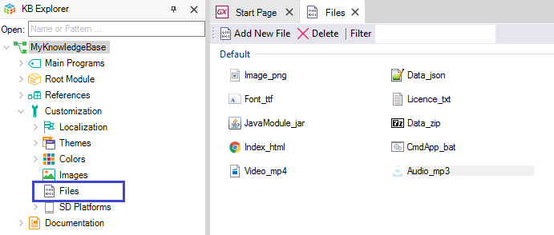
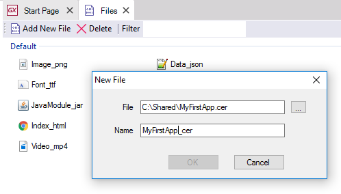
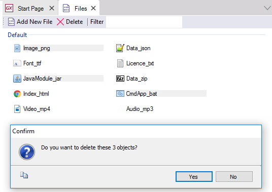
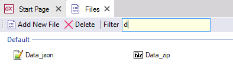
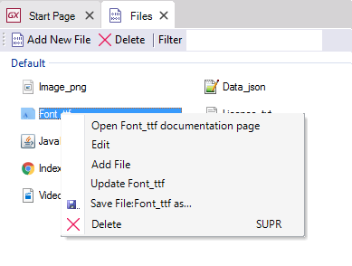
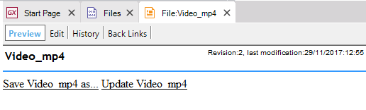
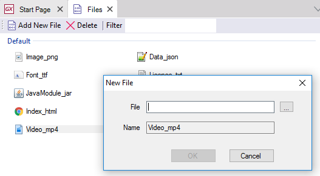

Stores a file of any format inside the Knowledge Base.
GeneXus supports any format for files saved inside Knowledge Bases. When it comes to file formats, anything goes. Their main purpose is to complement the ability to catalog all the knowledge contained in projects inside Knowledge Bases while simplifying associated management tasks (for instance, Import and Export). In sum, Knowledge Bases are used as common repositories, and project management is simplified.

Note. The file format is identified when you double-click on it, like with any browser. If the file is a .doc and MSOffice is installed in the client, the file will be opened in Word; likewise, an *.avi file will be reproduced with the default program installed for that type of file (Windows Media, etc.).
To add files to the Knowledge Base, click the Add New File button (or right-click on the Files area and click Add File).
A dialog box like the one shown below will be displayed. Next, enter the full name of the file, or start the search with the button to the right of the File cell.

To delete files simply select them and click the Delete button at the top (or right-click on the file and click Delete).

To quickly find files, use the Filter cell. Every character you type in the cell will take you closer to (or farther from) the file you are looking for.

Right-clicking on a file displays a context menu with the actions available.

Opens the file Documentation page, in the same way as when you click any Documentation link that references another element. The picture below shows what happens when you select this option for the Clock.avi file. Read more about the link labeled Save Clock.avi as...

Allows you to update the file selected from a device external to the Knowledge Base.

Allows you to save the file in a device external to the Knowledge Base.
To edit files you must right-click on the file and click Edit
Allows you to open the File in the selected editor for that type of file (defined in the operating system). With that editor, the file can be modified and when saving, the file is updated in the Knowledge base.
They help you define the file's behavior in relation to the following items: